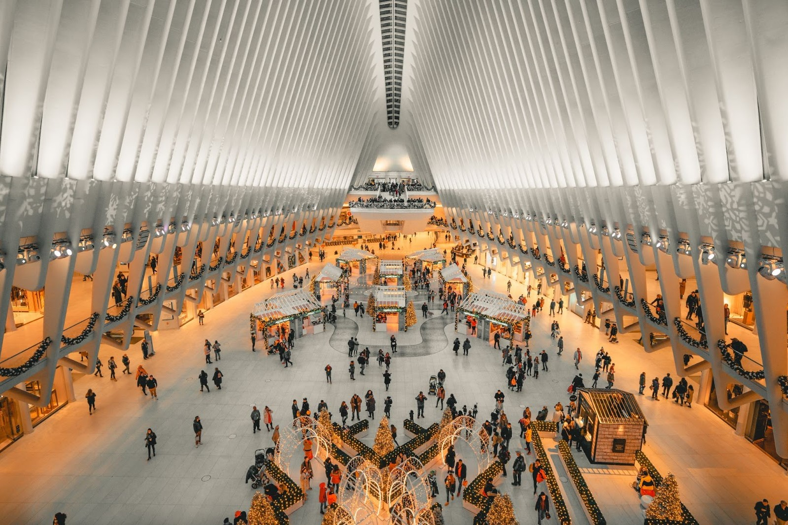

Miércoles 24 de abril


Jueves 25 de abril


Viernes 26 de abril
Mañana
| Actividad | Transporte | Hora | Imagen |
|---|---|---|---|
| Desayunar | - | 08:00-09:00 | |
| Metro al World Trade Center (Oculus) | 🚇30min | 09:30-10:00 |  |
| Memorial 11S | - | 10:00-11:00 |

|
| Distrito financiero | - | 11:00-12:00 |

|
| Toro de Wall Street | - | - |

|
| Estatua de la Libertad e Isla Ellis | 🚇35min | 12:00-15:30 |

|
Tarde
| Actividad | Transporte | Hora | Imagen |
|---|---|---|---|
| Helicóptero nocturno | 🚶30min | 18:00 - 19:00 |

|
Sábado 27 de abril
Mañana
Tarde
Domingo 28 de abril
Mañana
Tarde
Lunes 29 de abril


Martes 30 de abril
Mañana y tarde
| Washington DC | 🚇15min | 06:00-22:00 |
Miércoles 1 de mayo


Jueves 2 de mayo
Mañana
Tarde
Viernes 3 de mayo
Mañana
| Actividad | Hora | Tiempo de Transporte |
|---|---|---|
| Vuelo de regreso a casa desde el Aeropuerto Internacional John F. Kennedy | 7:00 - 10:00 | N/A |